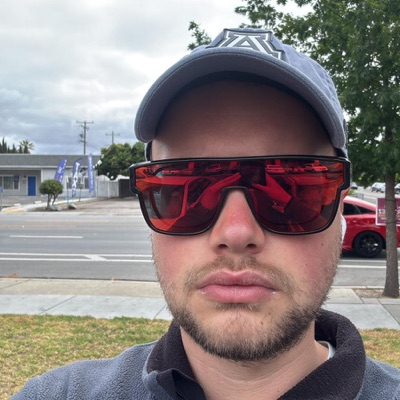

H. Umut Suluhan
I build runtime systems and scheduling software that make heterogeneous hardware fast and usable,
from RISC-V SoCs and CGRAs on FPGAs to RDMA transport for distributed data processing.
I'm finishing my PhD in Electrical and Computer Engineering at the University of Arizona and looking for full-time engineering roles.
PhD expected May 2027 · Tucson, AZ
Experience
Software Engineering Intern, Google
May - Aug 2026 · Sunnyvale, CA
RDMA transport for Apache Spark and Apache Celeborn
I built an RDMA transport for Spark and Celeborn that bypasses the host kernel for zero-copy
scatter-gather transfers, and scaled it to route shuffle traffic between dedicated Spark and Celeborn clusters.
The RDMA path is written in C++ and bridged to the Java/Scala frontend through JNI, running over RoCE on Google Compute Engine VMs.
- 1.27x faster distributed shuffle on a shuffle-heavy baseline
- 1.10x end-to-end speedup on 1TB TPC-DS and TPC-H
- 2x shorter shuffle write time, 1.5x shorter read time
- 67% less kernel CPU overhead, 1.67x more active user-space compute
C++ · JNI · Java/Scala · RDMA (RoCE, verbs) · Spark · Celeborn
Code: celeborn rdma-0.6.3 branch
Graduate Research Associate, University of Arizona
Jan 2023 - present · Tucson, AZ
My PhD research is on runtime scheduling and resource management for heterogeneous SoCs that combine CPUs with
domain-specific accelerators. As first author, I led three lines of that work:
- K-PACT (ICCAD 2025): a planning tool that clusters and places kernels on CGRAs and systolic arrays so they can switch context in nanoseconds.
- RISC-V emulation environment (IPDPSW 2024): a multi-core RISC-V SoC on an FPGA that runs the CEDR runtime on Linux, with small dedicated cores that manage the accelerators.
- PyTorch-to-CEDR (AICCSA 2023): runs unmodified PyTorch models on FPGA accelerators by routing their operators through the CEDR runtime.
Underneath that research is a lot of systems work. I've brought up Linux on FPGA SoCs (RISC-V BOOM and Rocket on VC707, Arm on ZCU102, MicroBlaze on VCU128),
written user-space drivers that move data between pinned memory and accelerators over AXI DMA, and built
HLS accelerators for ML kernels on an Alveo U280. I also worked on two DARPA programs, DSSoC and PROWESS,
on software-reconfigurable heterogeneous SoCs.
Runtime scheduling · Heterogeneous SoCs · FPGA (Vivado, Vitis HLS, ILA) · PetaLinux · Buildroot · QEMU
Graduate Teaching Assistant, University of Arizona
Aug 2025 - present · Tucson, AZ
I wrote a Chipyard tutorial on RISC-V SoC development for the Computer Architecture course (see
below). In Fall 2026 I received the College of Engineering Outstanding ECE Graduate Teaching Assistant Award.
Undergraduate Researcher, TÜBİTAK
Sep 2021 - Dec 2022 · Türkiye
Reference-based video super-resolution with dual cameras, published as HSTR-Net. I implemented the model's attention
mechanism and deployed it with TensorRT on an NVIDIA Jetson AGX Xavier.
HSTRNet HSTRNet-Interp
Projects
K-PACT: kernel planning for adaptive context switching
ICCAD 2025
Wideband spectrum sensing has to switch kernels on a CGRA or systolic array constantly,
and fetching each kernel binary from off-chip memory makes those switches slow. K-PACT clusters temporally independent
kernels so they share PE instruction memories, then places the clusters on the PE array for nanosecond-scale context switching.
I formulated it as a multi-objective optimization over context-switch overhead, scheduling latency and dataflow.
Against a no-preloading baseline in the DS3 simulator, over 48 concurrent subchannels:
- 132.92x faster per-subband execution
- 207.81x fewer off-chip binary fetches
- 98.24x lower switching time
- 73.77x lower scheduling time
CAD · Clustering and placement · CGRAs · Systolic arrays · DS3
Paper
Code
RISC-V emulation environment for the CEDR runtime
IPDPSW 2024
I extended the CEDR heterogeneous runtime to multi-ISA SoCs with RISC-V cores. On a Virtex-7 VC707, I built a six-core
RISC-V SoC (one BOOM, two big Rocket and three trimmed little Rocket cores) with three Xilinx FFT accelerators, running Debian Linux
with AXI4-Stream DMA through udmabuf. The little cores, stripped of branch prediction and the FPU and given smaller caches,
only move data between RAM and accelerators and track task progress.
- Up to 47% lower accelerator management overhead (31.7% on average)
- Up to 2.26x application speedup on radar, SAR, Pulse Doppler, WiFi TX and lane detection
RISC-V · Chipyard / Rocket-chip · BOOM · Chisel · Embedded Linux · MET/EFT/ETF scheduling
Paper
Code
PyTorch-to-CEDR: ML models on heterogeneous SoCs
AICCSA 2023
A PyTorch C++ extension that redirects selected operators to the CEDR runtime, so an unmodified PyTorch model runs on
FPGA accelerators with no hardware knowledge from the user. Everything else falls back to PyTorch's CPU path. I built it end to end,
including the operator mapping and a tool that extracts layer specs and the dataflow graph from a model to generate CEDR applications.
On a Zynq UltraScale+ ZCU102 with HLS-built Conv2D and ZIP accelerators, U-Net object detection, VGG and speech-command models ran
alongside signal processing workloads with no accuracy loss.
PyTorch · C++ · Vitis HLS · ZCU102 · RR/EFT/ETF/HEFT_RT scheduling
Paper
Code
Chipyard tutorial for RISC-V SoC design
ECE 462/562
A hands-on tutorial for the University of Arizona Computer Architecture course. I wrote all the technical sections:
- A Docker-based Chipyard and Rocket environment with Verilator simulation
- Measuring CPI for a region of interest with
mcycle and minstret
- A benchmark harness that reads eight hardware performance counters: branch, load and multiply counts, branch mispredictions, mul/div stalls, I- and D-cache misses
- Data-cache sensitivity experiments over sets, associativity and capacity
- RoCC accelerator integration, and adding a custom
clamp8 instruction to Rocket's decode and ALU
Tutorial repo
PetaLinux on a MicroBlaze SoC
VCU128
A MicroBlaze SoC on a Xilinx VCU128 with an FFT accelerator fed by AXI DMA, built from a scripted Vivado block design.
I brought up PetaLinux 2024.2 with a custom device tree and U-Boot configuration, and wrote a user-space C++ FFT/DMA driver.
It boots under QEMU or on the board over JTAG.
Code
Education
- PhD, Electrical and Computer Engineering, University of Arizona, 2023 - May 2027 (expected)
- BS, Computer Science, Ozyegin University, Istanbul, 2018 - 2023
Skills
- Languages
- C++, CUDA, C, Python, Java, Scala, Chisel, Bash
- Systems
- RDMA (RoCE, verbs), kernel-bypass networking, Spark, Celeborn, task-graph scheduling, OpenMP, pthreads, MPI
- Hardware
- Heterogeneous SoCs, CGRAs, systolic arrays, RISC-V (Chipyard, Rocket, BOOM), FPGA prototyping, Vitis HLS, AXI
- Tools
- Vivado, ILA, perf, gdb, flame graphs, Docker, QEMU, PetaLinux, Buildroot, Git, CMake, Slurm
Publications
Full list on Google Scholar.
Journal articles
-
CADAS: Communication-Aware Dynamic Scheduler on CGRAs for Large-Volume and Real-Time Processing
J. Lin, H. U. Suluhan, C. Chakrabarti, A. Akoglu, U. Y. Ogras
ACM Transactions on Embedded Computing Systems, 2026 · DOI
-
An Overview of Challenges and Requirements for Real-Time Spectrum Sensing in Modern RF Autonomy Systems
J. Lin, H. U. Suluhan, et al.
IEEE Design & Test, 2025
-
HSTR-Net: Reference Based Video Super-Resolution with Dual Cameras
H. U. Suluhan, A. E. Doruk, H. F. Ates, B. K. Gunturk
Machine Vision and Applications, 2025
-
HOPPERFISH: Holistic Profiling with Portable Extensible and Robust Framework Intended for Systems with Heterogeneity
M. Ghanim, S. Gener, H. U. Suluhan, P. Dattilo, A. Akoglu
ACM Transactions on Architecture and Code Optimization, 2025
-
A Portable Framework with Generalized Runtime Features for Task Graph Execution and Concurrent Multi-Application Deployment on Heterogeneous Systems
S. Gener, S. Hassan, H. U. Suluhan, L. Chang, C. Chakrabarti, T.-W. Huang, U. Ogras, A. Akoglu
Future Generation Computer Systems, 2025
-
Coarse Grained Task Parallelization by Dynamic Profiling for Heterogeneous SoC Based Embedded System
L. Chang, S. Gener, J. Mack, H. U. Suluhan, A. Akoglu, C. Chakrabarti
ACM Transactions on Embedded Computing Systems, 2024
Conference papers
-
Lightweight Runtime Architecture for Dynamic Heterogeneous Systems
S. Hassan, S. Gener, M. Ghanim, J. Mack, K. Dilber, A. Ukarande, H. U. Suluhan, S. Mysore Srinivasa Murthy, J. Holtom, D. W. Bliss, C. Chakrabarti, U. Ogras, A. Akoglu
IEEE/ACM CODES 2026 · DOI
-
K-PACT: Kernel Planning for Adaptive Context Switching. A Framework for Clustering, Placement, and Prefetching in Spectrum Sensing
H. U. Suluhan, J. Lin, S. Gener, C. Chakrabarti, U. Ogras, A. Akoglu
IEEE/ACM ICCAD 2025 · DOI
-
Reconfigurable System Design and Trade Studies for Dynamic Spectral Sensing
A. Dutta, J. Lin, H. U. Suluhan, G. Gubash, U. Y. Ogras, A. Akoglu, B.-P. Paris, D. W. Bliss
Asilomar Conference on Signals, Systems, and Computers, 2025
-
A Runtime Manager Integrated Emulation Environment for Heterogeneous SoC Design with RISC-V Cores
H. U. Suluhan, S. Gener, A. Fusco, J. Mack, I. Dagli, M. Belviranli, C. Edemen, A. Akoglu
IEEE IPDPSW 2024 · DOI
-
PyTorch and CEDR: Enabling Deployment of Machine Learning Models on Heterogeneous Computing Systems
H. U. Suluhan, S. Gener, A. Fusco, H. F. Ugurdag, A. Akoglu
ACS/IEEE AICCSA 2023 · DOI
-
CEDR-API: Productive, Performant Programming of Domain-Specific Embedded Systems
J. Mack, S. Gener, S. Hassan, H. U. Suluhan, A. Akoglu
IEEE IPDPSW 2023
-
Dual Camera Based High Spatio-Temporal Resolution Video Generation for Wide Area Surveillance
H. U. Suluhan, H. F. Ates, B. K. Gunturk
IEEE AVSS 2022
Awards and service
- Outstanding ECE Graduate Teaching Assistant Award, University of Arizona College of Engineering, Fall 2026
- IEEE Circuits and Systems Student Travel Grant and ICCAD 2025 Student Scholar Program, 2025
- Peer reviewer for nine IEEE and Springer journals, including IEEE Transactions on Sustainable Computing and IEEE Transactions on Circuits and Systems for Video Technology
- Vice President and co-founder, Turkish Student Association, University of Arizona, 2024 - present